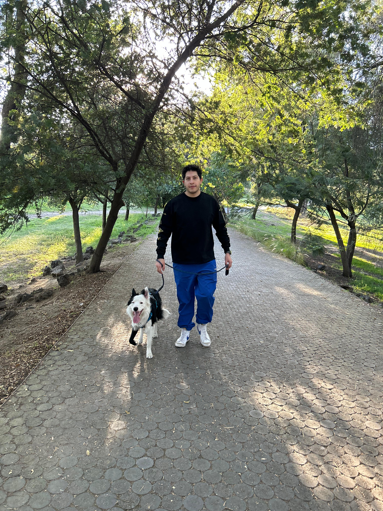

<section id="about" class="py-5">
  <div class="container">
    <div class="row d-flex">
      <div class="col-md-6 flex-column">
        <h1 class="mb-4">
          About Me
          <hr />
        </h1>
        <p class="lead" id="description">
          I'm a Senior Software Engineer with 6+ years of experience building
          scalable web, mobile, and cloud applications for financial institutions
          and enterprise clients. <br />
          I've worked across multiple stacks — from C# and .NET to JavaScript,
          TypeScript, and Python — building microservices, modern front ends, and
          cloud-native solutions. Lately I've also been focused on AI-powered
          systems using LLMs and RAG. Passionate about clean code, performance,
          and improving life with technology.
        </p>
        <div id="skills">
          <p class="lead">My skills include:</p>
          <ul class="lead">
            <li>
              Front-End: Angular, React, Next.js, JavaScript, TypeScript,
              HTML, CSS, Flutter
            </li>
            <li>
              Back-End: C#, .NET Core, Node.js, NestJS, Python, RESTful APIs
            </li>
            <li>
              Cloud &amp; DevOps: Azure, AWS, GCP, Docker, Kubernetes, Jenkins,
              Git
            </li>
            <li>
              Databases: SQL Server, PostgreSQL, MongoDB, NoSQL, Vector
              Databases
            </li>
            <li>
              Architecture &amp; AI: Microservices, Clean Architecture, SOLID,
              LangGraph, RAG, LLMs
            </li>
          </ul>
          <div class="pacman-track">
            <div class="containerpac">
              <div class="scrolling-images">
                <div class="scrolling-images-track">
                  <div class="scrolling-images-set">
                    
                  </div>
                  <div class="scrolling-images-set" aria-hidden="true">
                    
                  </div>
                </div>
              </div>
            </div>
            
          </div>
        </div>
      </div>
      <div class="col-md-6 flex-column">
        <div class="d-flex flex-column h-100">
          <div id="photo" class="flex-grow-1">
            
          </div>
          <a
            *ngIf="cvUrl"
            [href]="cvUrl"
            class="btn btn-primary btn-block mb-2"
            id="cvButton"
            target="_blank"
            >Download Resume</a
          >
          <div class="card" id="hobbies">
            <div class="card-body">
              <h4 class="card-title">Hobbies</h4>
              <p class="card-text">
                When I'm not coding, I like to stay active — working out,
                walking my dog, or getting outside. I unwind with reading,
                painting, video games, and a good film or series. Most of all,
                I love spending time with the people I care about.
              </p>
            </div>
          </div>
        </div>
      </div>
    </div>
  </div>
</section>
